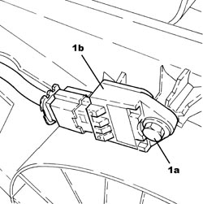
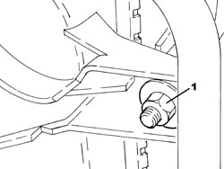
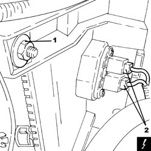

1088E10 RADIATOR COOLING FAN - R + R
- Path
- Procedures > 10 ENGINE > 1088 ENGINE COOLING > 1088E COOLANT TEMPERATURE CONTROL DEVICES > 1088E10 RADIATOR COOLING FAN - R + R
- Kind
- repair procedure (removal / refitting; the operation number is the code)
- Applies to
- engines: 2.2 JTS; all production periods
- Interactive page
- https://sloeber94.github.io/elrnDB-aBrrSpdr/en/#/946002023
Applies to: engines: 2.2 JTS; all production periods
 Removing
Removing
 Refitting
Refitting- Make sure that the ignition key is in the OFF position, then disconnect the battery terminal (-).
Description | Connector | |
|---|---|---|
- | Battery |
1. Undo the bolt (1a) and move the impact sensor (1b) to the side.

Applies to: engines: 2.2 JTS; all production periods
1. Disconnect the electrical connection from the radiator cooling fan.
Description | Connector | |
|---|---|---|
1 | Engine fan motor |

Applies to: engines: 2.2 JTS; all production periods
1. Undo the right nut securing the radiator cooling fan.

Applies to: engines: 2.2 JTS; all production periods
1. Undo the left nut securing the radiator cooling fan.
2. Disconnect the electrical connections for the engine cooling fan resistor.
Description | Connector | |
|---|---|---|
2 | Engine fan adjustment resistance |

Applies to: engines: 2.2 JTS; all production periods
1. Remove the radiator cooling fan releasing it upwards.

Applies to: engines: 2.2 JTS; all production periods
1. At the bench, undo the nuts (1a) and separate the fan motor (1b) from the duct (1c).

Applies to: engines: 2.2 JTS; all production periods
Refitting
Removing- Fit the fan motor on the duct and secure it using the nuts.
- Refit the radiator cooling fan and secure it using the nuts.
- Connect the electrical connections to the engine cooling fan resistor.
- Position the impact sensor in its housing and secure it using the bolt.
- Connect the negative battery terminal.